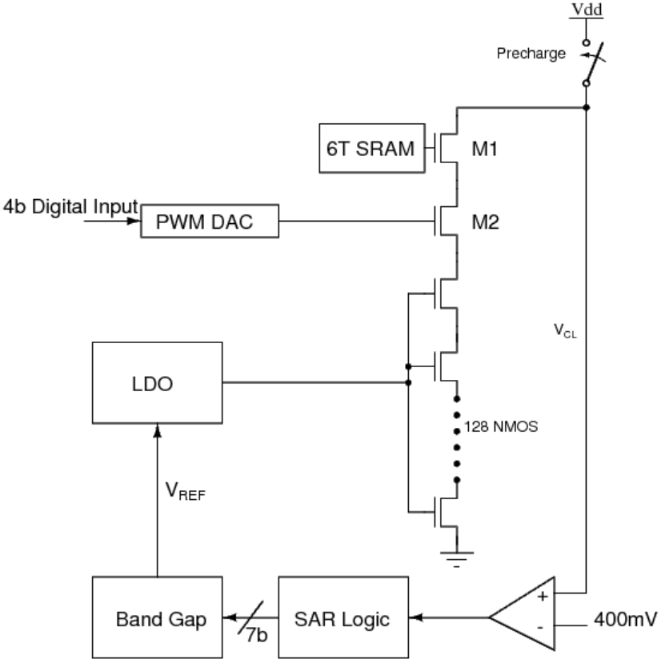
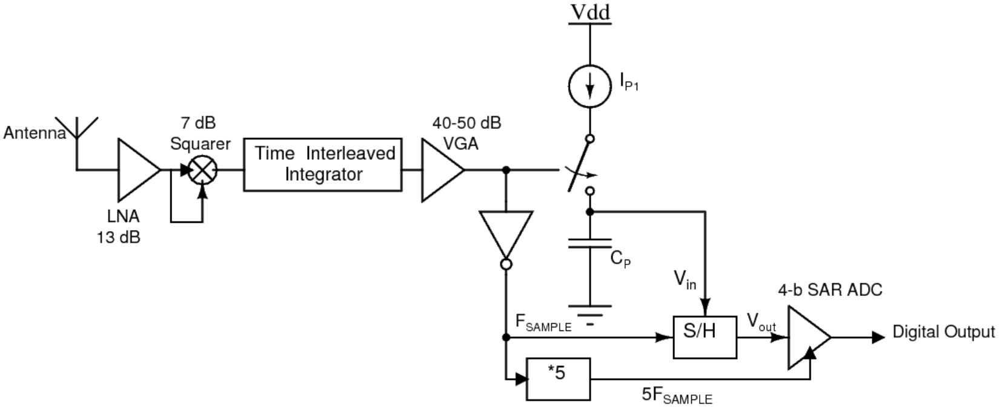
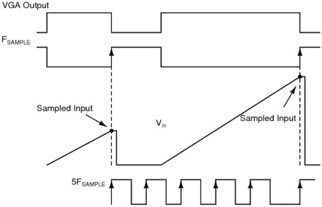
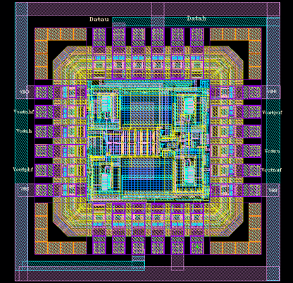
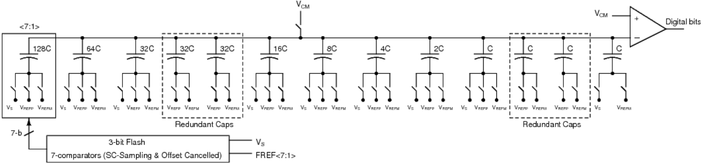
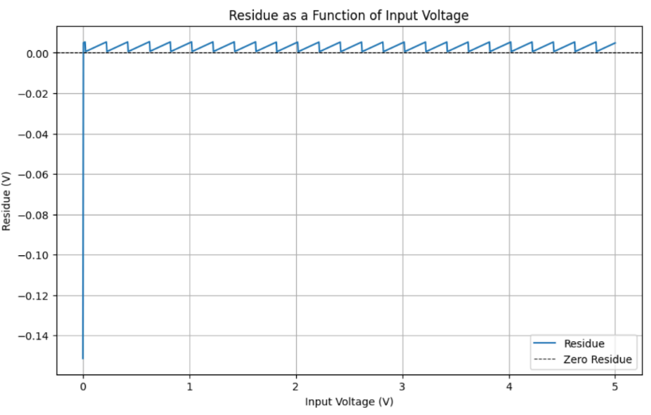
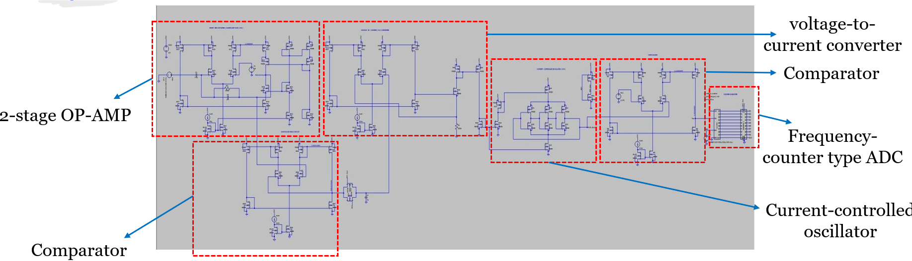
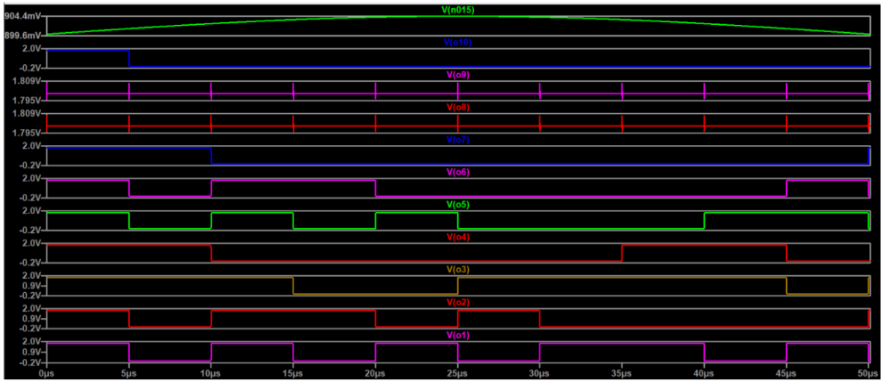

Research Interests
ML Accelerators, In-Memory Computing, Neuromorphic Circuits,
Device-Circuit-Architecture-Algorithm Co-design, Analog/RF & Mixed-Signal Design
SRAM-based In-Memory Computing Circuits for Deep Learning Accelerators in TSMC 5nm FinFET
Pursuing this project as Bachelor's Thesis in collaboration with DX Corr Inc., USA
Modern DNN models require millions to billions of multiply-and-accumulate (MAC) operations.
Conventional Von-Neumann architectures create a wall between memory and computational units, forcing multiple data
transfers between the blocks. This results in a high energy per MAC operation. So, computations are now performed
within the memory, known as In-Memory-Computing. In our design, the crossbar is made of a modified bit-cell
(M-BC) consisting of a 6T SRAM cell.
The biggest challenge is to keep the discharge current constant amid PVT variations to
ensure uniform and accurate computation across all corners. Additional aging effects such
as negative bias temperature instability (NBTI) and hot carrier injection (HCI) also come
into play, which causes transistor threshold voltages to drift over time. So, we propose a
novel calibration loop that modulates the gate voltage of the NMOS stack to keep the discharge current constant.
The calibration loop, consisting of a dynamic comparator, SAR logic, a DAC, a bandgap reference, and an LDO, ensures accurate
computation across all corners.
At the input peripherals is a Pulse-Width Modulated (PWM) DAC, which takes in 4-bits and produces a pulse of
proportional width. This helps in executing multi-bit MAC operation.
Conventionally, the voltage of each compute line is fed to an ADC for digitization. However, as ADCs are the most
power-hungry component in the design, we share ADCs between columns. So, it is essential to combine the voltage of
some columns with proper binary weights such that the resultant voltage can be applied as input to a single ADC.
This is done using a binary weighted capacitor-based voltage summation block.
My key contributions in this work are:
Architectural design of the calibration loop [especially the bandgap and SAR logic blocks]. Implemented binary weighted capacitor-based voltage summation to reduce the number of ADCs in the
peripherals, thereby reducing power consumption by roughly 70%. Also found the ideal number of columns
to be capacitively coupled, keeping MAC accuracy in mind. Designed a rail-to-rail Dynamic Comparator with a pre-amplifier as a part of the calibration loop.
The detailed implementation is shown in the
thesis. Presently designing the 7-bit SAR ADC present in the output peripherals.
|
 |
| Guide: Prof. Mrigank Sharad & Prof. Indrajit Chakrabarti |
Institute: Indian Institute of Technology Kharagpur &
DX Corr Design Inc., USA |
| Collaborator(s): Haldar A., Ingle P., Debnath S., Vairagade A., & Sharad M. |
Duration: January 2024 - Ongoing |
Ultra-wideband Wireless Integrated Circuits for Ultra-low Power Communications
Pursued this project as the Mitacs Globalink Research Internship 2024

 |
In 2002, the Federal Communication Commission allocated a 7.5 GHz bandwidth
[3.1-10.6 GHz] for ultra-wideband devices. This large bandwidth is achieved by using sub-nanosecond pulses and
allows us to transmit data at high speeds. However, the maximum transmitted signal power, even if the entire spectrum
is utilized, is -14.3 dBm. This restricts the communication range. So, prior works have proposed
innovative modulation schemes that increases the transmission power.
The biggest advantage of UWB communication is that the extremely narrow, low-duty cycle pulses significantly reduces
the power consumption of the transceiver. Non-coherent receivers that use integrators for energy detection
are relatively less complex. To achieve a low bit error rate, it is essential to integrate the
signal from the correct instant and for the correct duration. So, there must be a
synchronization between the received signal and the integration window. In most of the prior literature, a PLL
has been used along with digital control logic to generate integration windows having different phases.
My key contributions in this work are:
I mathematically demonstrated a modulation scheme named Analog Pulse-Width Modulation (A-PWM), where 4-bits of
digital data are encoded in the form of the width of a rail-to-rail pulse. The pulse duration is the digital equivalent
of the 4-bit binary word*100 ps. It has been shown that the energy per bit increases in this modulation scheme,
resulting in enhanced communication range and low bit error rate. Using the A-PWM modulation scheme, I proposed a novel non-coherent receiver architecture that does not
use a PLL for synchronization purpose. The proposed architecture only relies upon a squarer and time-interleaved
integrator for energy collection followed by a charge-pump for generating a ramp signal, which is then
sampled and digitized by a 4-bit SAR ADC. Designed the Gilbert-cell based analog squarer and time-interleaved integrator as a part of the
receiver front-end in TSMC 180nm technology node. Detailed implementation is presented in the
report.
|
| Guide: Prof. Frederic Nabki |
Institute: École de Technologie Supérieure Montréal |
| Collaborator(s): Ali Poursaadati Zinjanab & Nabki F. |
Duration: 06.05.2024 - 26.07.2024 |
Design of Radiation-Hardened Cross-coupled Quadrature Voltage-Controlled Oscillator
Pursued this project as an industry-academia collaboration with ISRO
The Indian Space Research Organization (ISRO) required a 1 Gbps
Serializer-Deserializer (SERDES) module, to be used in high data-rate modulators and high-speed
solid state drivers for data storage. It consists of VCO, PLL, LVDS driver and receiver as its
building blocks. My contribution was on the design of the Voltage-Controlled Oscillator (VCO).
Electronic circuits, when operated in space, experience sudden
charge injection in transistor junctions and unwanted perturbations in IC operation, called
Single Event Effects (SEEs). So, circuits must be radiation-hardened before operating them in space.
Prior designs for SEE-tolerant VCO used a majority voting scheme that used three parallel VCOs with pair-wise
capacitive cross-coupling between corresponding stages. This adds asymmetry to the VCO phases and makes one of
the phases unequal. Also, it does not ensure radiation tolerance at the output of the majority voting gate.
The salient features of this work are:
We designed a VCO with an even number of equally-spaced phases [as required in half-rate or quadrature-rate
clock and data recovery circuits]. The proposed scheme does not rely on any majority voting gate and hence does not require any additional stage,
thereby mitigating any asymmetry and also reducing hardware overhead. Each stage of the oscillator is split into N parallel branches, all of whose outputs are coupled to the
stage output by a parallel RC network. Coupling only through a capacitor fails to establish proper DC conditions.
So, large resistors are placed in parallel to establish a well-defined DC operating point. In this manner, the effect of a strike on any one of the branches gets suppressed by a factor of N at
the stage output node. The radiation-hardened VCO shows a nearly 80% reduction in clock jitter upon a radiation strike compared to
its unhardened counterpart. We taped out the entire chip in SCL 180nm. This work resulted in a patent application for a novel VCO.
Detailed implementation is shown in the
report.
|
 |
| Guide: Prof. Mrigank Sharad & Dr. Hari Shanker Gupta |
Institute: Indian Institute of Technology Kharagpur &
Space Applications Center (SAC) Ahmedabad, ISRO |
| Collaborator(s): Haldar A., Gupta H., & Sharad M. |
Duration: May 2023 - December 2023 |
Redundancy Algorithm for a 10-bit Sub-Ranging ADC
Pursued this as the course project of EE60032-Analog Signal Processing

 |
Successive Approximation ADC have good integral linearity, i.e., low INL, but
requires N clock cycles to achieve a N-bit resolution. Flash ADCs on the other hand are one-shot, in
the sense that all the N-bits are obtained at once. However, Flash ADC requires 2N-1
comparators which makes its silicon footprint extremely large. To this end, the speed of Flash is
combined with the linearity of SAR to make something known as Sub-Ranging ADC. In this project, we
realize a switched-capacitor-based 10-bit Sub-Ranging ADC with 3-bit Flash ADC and 7-bit SAR.
The first 3-bits are resolved by a Flash ADC while the residue is resolved by a SAR ADC.
Switched-capacitor implementations are vulnerable to parasitic capacitors at the top plate of the sampling
cap. These parasitic capacitors take part in the charge sharing process and degrade the ADC linearity.
Additionally, mismatches between the binary-weighted capacitors and variation in flash comparator references
also contribute to the error. So, we came up with a Redundancy Algorithm with 2 redundant bits for
ensuring ADC accuracy at the cost of 4 redundant caps. The Redundancy Algorithm is implemeted using
Python and the residue graph is plotted.
The highlights of this project are:
Designed a switched-capacitor-based 10-bit Sub-Ranging ADC [3-bit Flash and 7-bit SAR] in Cadence. Implemented a Redundancy Algorithm with 2 redundant bits for the above ADC to ensure
correct digital output even in the presence of capacitor mismatch, parasitic capacitor on the top
plate of the CDAC, offsets in the comparator, and reference voltage error. Evaluated the ADC performance using INL and residue plot. Detailed implementation is presented in the
report.
|
| Guide: Prof. Prajit Nandi |
Institute: Indian Institute of Technology Kharagpur |
| Collaborator(s): - |
Duration: October 2024 - November 2024 |
Design of 7-bit Frequency Counter type ADC
Pursued this project as a part of the VLSI Winter Workshop 2022
I was selected to attend the VLSI Winter School at IIT Kharagpur,
organized by Prof. Mrigank Sharad, soon after the end of Fall 2022. The 4-month long workshop
went into great depth about designing some of the most critical analog blocks, such as operational
amplifiers, oscillators, data converters, and essential concepts such as switched capacitor circuits.
By the end of the workshop, I designed the complete analog front end for biomedical signal
acquisition and digitization in 180nm CMOS, consisting of a variable gain amplifier, voltage-to-current
converter, current-controlled oscillator, and a 7-bit ADC.
The highlights of this work are:
Designed a 2-Stage Op-Amp with an open loop gain of approx. 10,000. Used the Op-Amp in a closed
loop [capacitive feedback] as the front-end amplifier, with a gain of 100 and bandwidth of 200 KHz. Designed a linear voltage-to-current (V2I) converter to convert Op-Amp output into proportional
current. Implemented Current Controlled Oscillator (CCO) using current-starved inverter configuration
and obtained linear characteristics up to 135 MHz frequency range. Used a Comparator to convert CCO output to a full swing rectangular waveform. Designed Counter and Register to count the number of pulses in one sampling period and achieved
7-bit resolution. Simulated the complete design in LTspice using 180 nm Predictive Technology Model (PTM).
Detailed circuit implementation is shown in the
report.
|

 |
| Guide: Prof. Mrigank Sharad |
Institute: Indian Institute of Technology Kharagpur |
| Collaborator(s): - |
Duration: December 2022 - April 2023 |
|  Saptashwa
Saptashwa